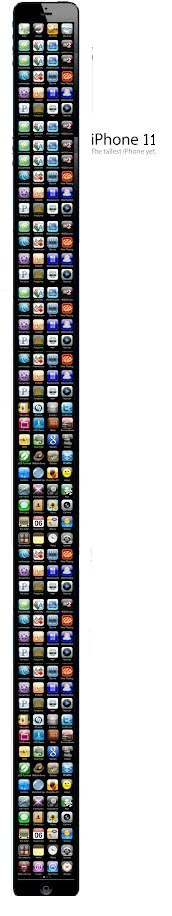
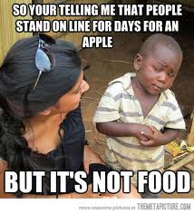

iPhone

The iPhone is a line of
smartphones designed and marketed by Apple Inc.
There are six generations of iPhone models. All of them are
awful.

For some years, Apple and its manufacturing contractor
Foxconn have received criticism due to poor working conditions
at the assembly plant in China, which had a huge riot in late
2012. Of course though no riots occur over amazing Windows
phones.
Advantages:
Siri(Google Now makes irrelevant)- If you ask Siri where to hide the body, it gives you a
list of close dumpsters and rivers.
- Siri stands for Serial Killer!!
- Safer app store
- Safer app store
- See emoticons from other iPhone users :)
- Then go back and buy and Android phone
- You waste your money in making some other people a lot
more wealthier
Android

Android
is a Linux-based operating system designed primarily for
touchscreen mobile devices such as smartphones and tablet
computers.
The world's most widely used smartphone platform.
Android had a worldwide smartphone market share of 75%
during the third quarter of 2012, with 500 million devices
activated in total and 1.3 million activations per day. The
operating system's success has made it a target for patent
litigation as part of the so-called "smartphone wars" between
technology companies.
Advantages:
- Geek cred
- Hardware choices
- Map tool won't lead you off a bridge